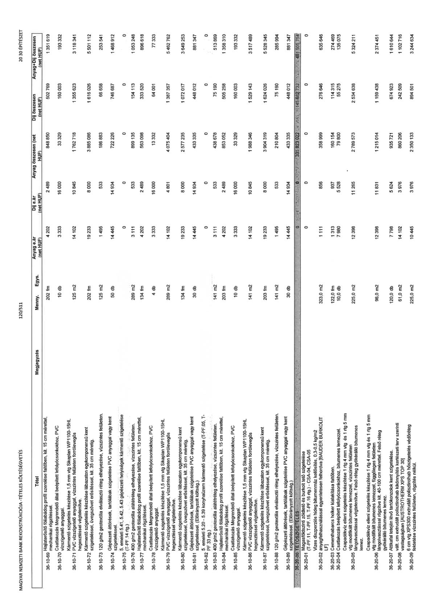

| Tétel | Megjegyzés | Menny. | Egys. | Anyag e.ár (net HUF) | Díj e.ár (net HUF) | Anyag összesen (net HUF) | Díj összesen (net HUF) | Anyag+Díj összesen (net HUF) |
|---|---|---|---|---|---|---|---|---|
| 36-10-69 | Hajlaterosíto fóliabádog profil szerelése falfödben, kit. 15 cm mérettel, mechanikai rögzítéssel. | NaN | 202 fm | 4 202 | 2 489 | 848 850 | 502 769 | 1 351 619 |
| 36-10-70 | Csatlakozás Megrendelo által beépített lefolyócsonkokhoz, PVC vízszigetelo anyaggal. | NaN | 10 db | 3 333 | 16 000 | 33 329 | 160 003 | 193 332 |
| 36-10-71 | Kármento szigetelés készítése 1,5 mm vtg Sikaplan WP1100-15HL PVC vízszigetelo anyaggal, vízszintes felületen forrólevegos hegesztéssel végtelenítve. | NaN | 125 m2 | 14 102 | 10 845 | 1 762 718 | 1 355 623 | 3 118 341 |
| 36-10-72 | Kármento szigetelés készítése lábazaton egykomponensu kent szigeteléssel, üvegszövet erosítéssel, kit. 35 cm méretig. | NaN | 202 fm | 19 233 | 8 000 | 3 885 086 | 1 616 026 | 5 501 112 |
| 36-10-73 | 120 g/m2 geotextília elválasztó réteg elhelyezése, vízszintes felületen. | NaN | 125 m2 | 1 495 | 533 | 186 883 | 66 658 | 253 541 |
| 36-10-74 | Gépészeti áttörések, tartólábak szigetelése PVC anyaggal vagy kent szigeteléssel. | NaN | 50 db | 14 445 | 14 934 | 722 226 | 746 687 | 1 468 912 |
| 36-10-75 | 5. emeleti 5.41, 5.42, 5.43 gépészeti helyiségek kármento szigetelése (T-PF.14 rtg.) | NaN | NaN | 0 | 0 | 0 | 0 | 0 |
| 36-10-76 | 400 g/m2 geotextília alátétréteg elhelyezése, vízszintes felületen. | NaN | 289 m2 | 3 111 | 533 | 899 135 | 154 113 | 1 053 248 |
| 36-10-77 | Hajlaterosíto fóliabádog profil szerelése falfödben, kit. 15 cm mérettel, mechanikai rögzítéssel. | NaN | 134 fm | 4 202 | 2 489 | 563 098 | 333 520 | 896 618 |
| 36-10-78 | Csatlakozás Megrendelo által beépített lefolyócsonkokhoz, PVC vízszigetelo anyaggal. | NaN | 4 db | 3 333 | 16 000 | 13 332 | 64 001 | 77 333 |
| 36-10-79 | Kármento szigetelés készítése 1,5 mm vtg Sikaplan WP1100-15HL PVC vízszigetelo anyaggal, vízszintes felületen forrólevegos hegesztéssel végtelenítve. | NaN | 289 m2 | 14 102 | 4 801 | 4 075 404 | 1 387 357 | 5 462 762 |
| 36-10-80 | Kármento szigetelés készítése lábazaton egykomponensu kent szigeteléssel, üvegszövet erosítéssel, kit. 35 cm méretig. | NaN | 134 fm | 19 233 | 8 000 | 2 577 235 | 1 072 017 | 3 649 253 |
| 36-10-81 | Gépészeti áttörések, tartólábak szigetelése PVC anyaggal vagy kent szigeteléssel. (Eloirányzott költség.) | NaN | 30 db | 14 445 | 14 934 | 433 335 | 448 012 | 881 347 |
| 36-10-82 | 5. emeleti 5.20 - 5.39 konyhaüzem kármento szigetelése (T-PF.05, T-PF.33 rtg.) | NaN | NaN | 0 | 0 | 0 | 0 | 0 |
| 36-10-83 | 400 g/m2 geotextília alátétréteg elhelyezése, vízszintes felületen. | NaN | 141 m2 | 3 111 | 533 | 438 678 | 75 190 | 513 869 |
| 36-10-84 | Hajlaterosíto fóliabádog profil szerelése falfödben, kit. 15 cm mérettel, mechanikai rögzítéssel. | NaN | 203 fm | 4 202 | 2 489 | 853 052 | 505 258 | 1 358 310 |
| 36-10-85 | Csatlakozás Megrendelo által beépített lefolyócsonkokhoz, PVC vízszigetelo anyaggal. | NaN | 10 db | 3 333 | 16 000 | 33 329 | 160 003 | 193 332 |
| 36-10-86 | Kármento szigetelés készítése 1,5 mm vtg Sikaplan WP1100-15HL PVC vízszigetelo anyaggal, vízszintes felületen forrólevegos hegesztéssel végtelenítve. | NaN | 141 m2 | 14 102 | 10 845 | 1 988 346 | 1 529 143 | 3 517 489 |
| 36-10-87 | Kármento szigetelés készítése lábazaton egykomponensu kent szigeteléssel, üvegszövet erosítéssel, kit. 35 cm méretig. | NaN | 203 fm | 19 233 | 8 000 | 3 904 319 | 1 624 026 | 5 528 345 |
| 36-10-88 | 120 g/m2 geotextília elválasztó réteg elhelyezése, vízszintes felületen. | NaN | 141 m2 | 1 495 | 533 | 210 804 | 75 190 | 285 994 |
| 36-10-89 | Gépészeti áttörések, tartólábak szigetelése PVC anyaggal vagy kent szigeteléssel. (Eloirányzott költség.) | NaN | 30 db | 14 445 | 14 934 | 433 335 | 448 012 | 881 347 |
| 36-20-00 | TETOSZIGETELÉS | NaN | NaN | 0 | 0 | 33 823 022 | 14 682 732 | 48 505 754 |
| 36-20-01 | Magasföldszinti zöldteto és burkolt teto szigetelése (T-PF.11, T-PF.15, T-PF.16 rtg.) - CSA-04, CSA-05 | NaN | NaN | 0 | 0 | 0 | 0 | 0 |
| 36-20-02 | Vizes diszperziós hideg bitumenmáz kellosítés, 0,3-0,5 kg/m2 anyagfelhasználással egyenletesen felhordva [BAUDER BURKOLIT LF] | NaN | 323,0 m2 | 1 111 | 856 | 358 999 | 276 646 | 635 646 |
| 36-20-03 | Cementhabarcs holker kialakítása falföben. | NaN | 122,0 fm | 1 313 | 937 | 160 154 | 114 315 | 274 469 |
| 36-20-04 | Csatlakozás beépített lefolyócsonkokhoz, bitumenes lemezzel. | NaN | 10,0 db | 7 980 | 5 528 | 79 800 | 55 275 | 135 075 |
| 36-20-05 | Csapadékvíz elleni szigetelés készítése 1 rtg 4 mm vtg és 1 rtg 5 mm vtg modifikált bitumenes lemezzel, vízszintes felületen lángolvasztással végtelenítve. Felso réteg gyökérálló bitumenes lemez. | NaN | 225,0 m2 | 12 398 | 11 265 | 2 789 573 | 2 534 638 | 5 324 211 |
| 36-20-06 | Csapadékvíz elleni szigetelés készítése 1 rtg 4 mm vtg és 1 rtg 5 mm vtg modifikált bitumenes lemezzel, függoleges felületen lángolvasztással rögzítve kit. 40-100 cm mérettel. Felso réteg gyökérálló bitumenes lemez. | NaN | 98,0 m2 | 12 398 | 11 831 | 1 215 014 | 1 159 438 | 2 374 451 |
| 36-20-07 | Attikafal tetején lévo tartókonzolok kent szigetelése. | NaN | 120,0 db | 7 798 | 5 624 | 935 721 | 674 923 | 1 610 644 |
| 36-20-08 | vált. cm extrudált polisztirolhab kikönnyítés kertészeti terv szerinti vastagságban [AUSTROTHERM XPS TOP 30] | NaN | 61,0 m2 | 14 102 | 3 976 | 860 206 | 242 509 | 1 102 716 |
| 36-20-09 | 6 cm vtg XPS300 extrudált polisztirolhab hoszigetelés védoréteg fektetése vízszintes felületen, rögzítés nélkül. | NaN | 225,0 m2 | 10 445 | 3 976 | 2 350 133 | 894 501 | 3 244 634 |
